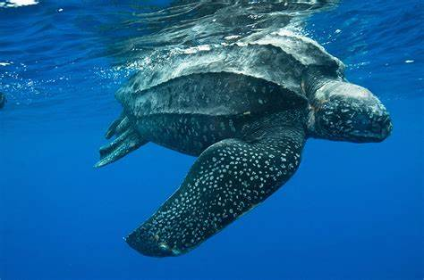
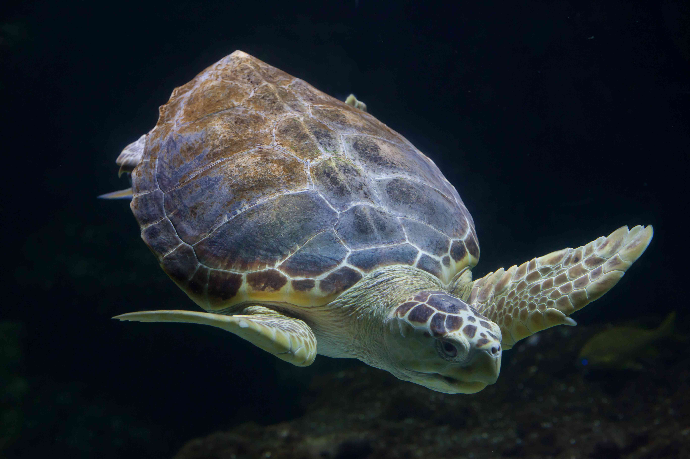

Sea Turtles
Marine turtles have inhabited the earth for over 100 million years and have evolved from tortoise-like animals. They have a head, a short neck, long foreflippers, short and rounded hind flippers, and a tail. They are reptiles and cold-blooded, so their body temperature is determined by the environment. They are fast and agile swimmers with long and muscular foreflippers, rudder-like hind flippers, and flattened shells. Marine turtles are highly migratory, moving between nesting and feeding grounds thousands of kilometers apart.

Their Behaviours
Between feeding and nesting grounds, sea turtles travel long distances. The average distance travelled by a leatherback is 3,700 miles. Sea turtles lay their eggs on beaches after mating at sea. In the case of the leatherback, females excavate a hole in the sand, lay their clutch of eggs (up to 100), cover it back up, and then re-enter the water.
The eggs hatch after about 60 days, and the tiny hatchlings go from the nest to the water at night. This is frequently a dangerous journey because seabirds, crabs, and other predators hunt on the baby turtles. The growth of the seashore poses another danger. The hatchings are guided to the ocean by natural light towards the horizon. Hotel, home, and other building lights can
Sea Turtles Found In Sri Lanka
Sri lanka is home to five species of endangered sea turtles, which are threatened by pollution, habitat loss and poaching. leatherback sea turtle, green turtle, loggerhead turtle, hawksbill turtle and olive ridley turtle. These sea turtles can be found in Sri Lankan sea area.
Green Turtle

Leatherback Turtle
Loggerhead Turtle
Threats For Sea Turtles
Six of the seven species of sea turtles are considered threatened or endangered across the globe as a result of human behavior and way of life. There are many ways that people harm these animals, from people catching them with fishing gear to people eating their meat and eggs. more
- Enlargement in fishing gear
- Consumption & illegal trade of eggs of meat
- Coastal development
- Plastic and other marine debris
- Global warming
- Turtle shell trade
Turtle Hatcheries In Sri Lanka
What is a Turtle Hatchery?
- Sea turtle hatchery is place where sea turtle hatched safely by using human in specific area. Mostly in West, South and South coast, we can see many turtle hatcheries.